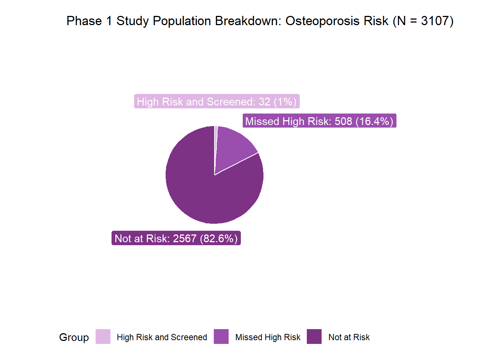
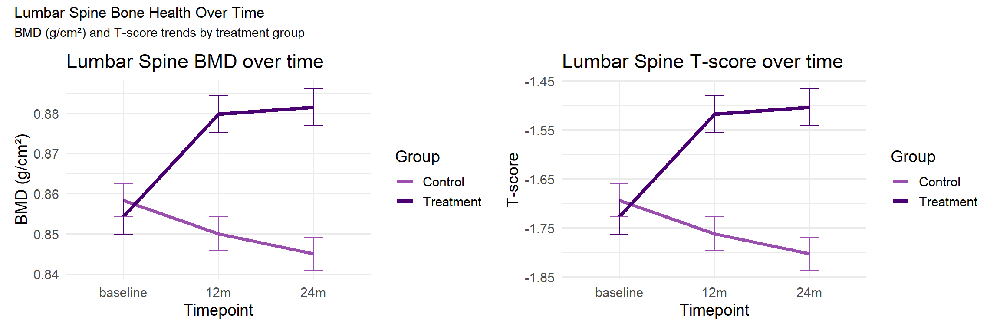
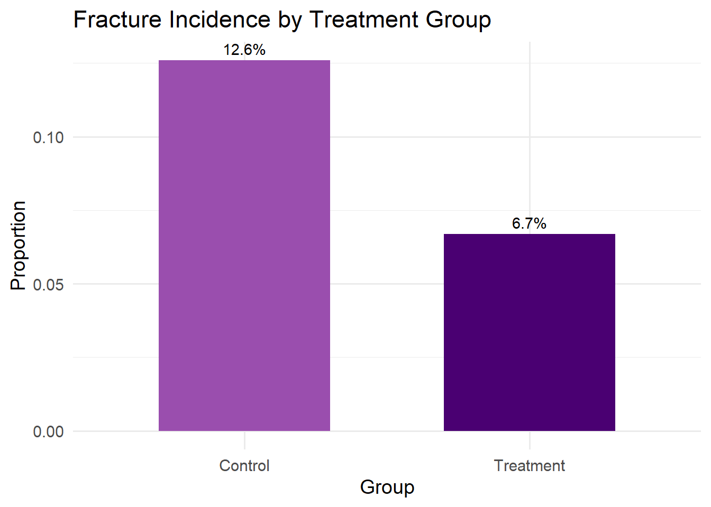
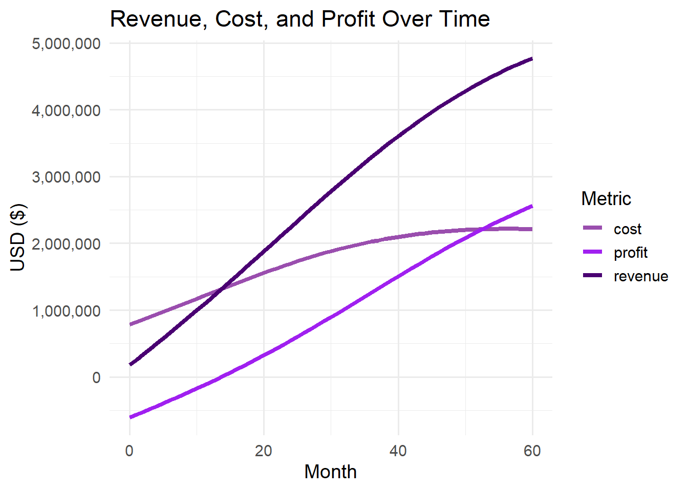

Show code
library(pacman)
p_load(magrittr, tidyverse, psych, dplyr, ggplot2, haven, janitor, readxl, writexl, knitr, kableExtra, scales, tibble, tidyr, patchwork, ggrepel)
library(pacman)
p_load(magrittr, tidyverse, psych, dplyr, ggplot2, haven, janitor, readxl, writexl, knitr, kableExtra, scales, tibble, tidyr, patchwork, ggrepel)Osteoporosis is a progressive condition characterised by reduced bone mineral density (BMD) and deterioration of bone structure, leading to increased fracture risk. Many individuals at high risk of fracture remain unidentified under current age-based screening guidelines, particularly those who present with clinical or lifestyle risk factors but do not meet standard screening age thresholds.
Phase 1 of this project used secondary population data (smoking, physical activity, body measurements, prior fracture history) to identify individuals at elevated bone-health risk and to quantify the proportion of high-risk individuals who are not captured by current screening criteria. This revealed a substantial “missed high-risk” population who may benefit from earlier identification and intervention.
Phase 2 builds on these findings by simulating the clinical and commercial impact of a hypothetical osteoporosis treatment if this missed high-risk population were successfully identified and treated. The purpose of this phase is to demonstrate how screening improvements could translate into improved clinical outcomes and potential commercial value in a realistic biopharmaceutical analytics context.
Individuals were classified as high bone risk in Phase 1 using a lumbar spine T-score–led definition. Participants with a lumbar spine T-score in the osteoporosis range (≤ −2.5) were classified as high risk regardless of other factors. Participants with a lumbar spine T-score in the osteopenia range (between −1.0 and −2.5) were classified as high risk only if at least one additional risk indicator was present. Risk indicators included low body mass index, current or former smoking, a history of fracture at the hip, wrist, or spine, or low levels of physical activity. This approach recognizes that moderately reduced bone density becomes more important when combined with other risk factors.
The Phase 1 analysis was conducted using data from 3,107 individuals in the NHANES 2005–2006 cohort, all aged 20 years or older. Among this study population, 540 individuals were classified as high-risk for osteoporosis based on bone mineral density (BMD) and additional clinical or lifestyle risk factors. Importantly, 508 of these high-risk individuals were not identified under current age- and guideline-based screening criteria. This represents approximately 16.35% of the total study population, highlighting a substantial “missed high-risk” group.
NHANES employs a complex, multistage probability sampling design, meaning raw sample proportions cannot be interpreted as nationally representative without adjustment. Therefore, survey weights (WTMEC2YR), strata (SDMVSTRA), and primary sampling units (SDMVPSU) were applied to account for oversampling and clustering within the National Health and Nutrition Examination Survey framework. After incorporating these design elements, the weighted prevalence of missed high-risk adults was 15.22%. This survey-adjusted estimate provides a nationally representative prevalence that can be used to project the number of U.S. adults aged ≥20 who may fall into this under-identified high-risk category today.
Applying the weighted prevalence estimate of 15.22% to the current U.S. adult population aged ≥20 (approximately 250 million individuals based on recent Census age distributions) suggests that roughly:
250,000,000 × 0.1522 = 38,050,000
≈ 38 million U.S. adults may fall into this expanded high-risk category yet remain unidentified under current age-based screening criteria.
From a public health and commercial perspective, these individuals represent a potentially addressable market for osteoporosis screening and treatment interventions. By targeting this missed population, there is an opportunity to improve early detection, initiate timely therapy, and potentially reduce fracture risk, while also quantifying the market potential for a treatment like OsteoGuard.
# Reading in data from phase 1
phase_1 <- read_xpt("data/poe_bone_health_phase1 - 2026.02.12.xpt")# Pie chart
# Counts
total_count <- nrow(phase_1)
high_risk_count <- sum(phase_1$high_bone_risk == 1)
missed_high_risk_count <- sum(phase_1$missed_high_risk == 1)
# Preparing df
pie_data <- data.frame(
group = c( "High Risk and Screened", "Missed High Risk", "Not at Risk"),
count = c(high_risk_count - missed_high_risk_count,
missed_high_risk_count,
total_count - high_risk_count)
) %>%
mutate(
percent = round(count / sum(count) * 100, 1),
label = paste0(group, ": ", count, " (", percent, "%)"),
ymax = cumsum(count),
ymin = c(0, head(ymax, n = -1)),
mid = (ymax + ymin) / 2
)
# Rendering plot
pie_data %<>%
mutate(
label_y = case_when(
group == "High Risk and Screened" ~ mid, # middle of wedge
group == "Missed High Risk" ~ ymax, # top of wedge
group == "Not at Risk" ~ mid # middle of wedge
),
label_x = case_when(
group == "Missed High Risk" ~ 5.4, # push to the right
TRUE ~ 4.5 # default for others
)
)
ggplot(pie_data, aes(ymax = ymax, ymin = ymin, xmax = 4, xmin = 3, fill = group)) +
geom_rect(color = "white") +
geom_label(
aes(x = label_x, y = label_y, label = label, fill = group),
color = "white",
show.legend = FALSE,
label.size = 0.2
) +
scale_fill_manual(values = c("#E0B6E4", "#9A4EAE", "#7E3285")) +
coord_polar(theta = "y", clip = "off")+
theme_void() +
labs(
title = "Phase 1 Study Population Breakdown: Osteoporosis Risk (N = 3107)",
fill = "Group"
)+
theme(
legend.position = "bottom",
plot.margin = margin(t = 10, r = 80, b = 10, l = 10)
)
For the purposes of this analysis, a hypothetical osteoporosis therapy, OsteoGuard, is introduced. OsteoGuard is modelled as a bisphosphonate-like treatment designed to improve bone mineral density and reduce fracture risk in high-risk individuals.
The simulated treatment is assumed to behave similarly to established bisphosphonates used in clinical practice. These therapies are known to increase lumbar spine bone mineral density, reduce fracture risk, and slow the progression from osteopenia to osteoporosis when adherence is maintained. OsteoGuard is assumed to be prescribed to individuals classified as high bone-health risk in Phase 1, with particular focus on those who would otherwise be missed under current screening guidelines.
All clinical and commercial data used in this phase are simulated but grounded in published literature and typical real-world treatment patterns to ensure plausibility.
The simulation of OsteoGuard treatment outcomes was informed by established clinical norms, Phase 1 study population parameters, published bisphosphonate efficacy studies, and pragmatic assumptions regarding adherence, safety, and commercial context.
The table below summarises all key modelling assumptions and their sources to ensure transparency, reproducibility, and interpretability of the simulated clinical and economic outcomes.
# Assumptions table
assumptions_tbl <- tribble(
~Section, ~Parameter, ~Assumption, ~Reference, ~`Why it's reasonable`,
#Baseline clinical norms
"Baseline clinical norms", "T-score interpretation: Normal", ">= -1.0", "Clinical DXA conventions",
"Standard clinical threshold used in DXA reporting.",
"Baseline clinical norms", "T-score interpretation: Osteopenia", "-1.0 to -2.5", "Clinical DXA conventions",
"Widely accepted range indicating low bone mass and higher future fracture risk.",
"Baseline clinical norms", "T-score interpretation: Osteoporosis", "<= -2.5", "Clinical DXA conventions",
"Standard diagnostic threshold used across guidelines and trials.",
# Phase 1 study population baselines
"Phase 1 study population parameters", "Mean lumbar T-score (high risk)", "-1.73", "Phase 1 analytic dataset",
"Empirical mean from the Phase 1 high-risk cohort; anchors simulation to observed baseline distribution.",
"Phase 1 study population parameters", "SD lumbar T-score (high risk)", "0.57", "Phase 1 analytic dataset",
"Empirical variability from Phase 1; aligns with typical dispersion in osteopenic/osteoporotic samples.",
"Phase 1 study population parameters", "Mean lumbar T-score (total sample)", "-0.09", "Phase 1 analytic dataset",
"Empirical mean from the Phase 1 full analytic sample; represents general population baseline.",
"Phase 1 study population parameters", "SD lumbar T-score (total sample)", "1.31", "Phase 1 analytic dataset",
"Empirical variability from Phase 1; reflects broad mix of low-to-normal bone density in the sample.",
# Treatment efficacy
"Treatment efficacy", "12m BMD change (ideal adherence)", "+4.6%", "Haderslev et al., 2000",
"Anchored to published trial evidence for spine BMD response over 12 months.",
"Treatment efficacy", "12m BMD change (average adherence)", "+2.8%", "Scaled from Haderslev et al., 2000",
"Represents partial effectiveness under less-than-ideal adherence, consistent with real-world attenuation.",
"Treatment efficacy", "12m BMD change (poor adherence)", "+1.2%", "Scaled from Haderslev et al., 2000",
"Conservative partial benefit reflecting low exposure/persistence with therapy.",
"Treatment efficacy", "12m BMD change (control)", "-0.9%", "Haderslev et al., 2000",
"Published untreated trajectory provides a realistic counterfactual baseline.",
"Treatment efficacy", "24m projected change (high adherence)", "~5.4%", "Interpolated from 12m & IOF evidence",
"Year-2 gains are typically smaller than year-1; projection maintains plausible 2-year cumulative improvement.",
"Treatment efficacy", "24m projected change (moderate adherence)", "~3.3%", "Interpolated from 12m & IOF evidence",
"Derived by scaling the high-adherence projection to reflect reduced exposure/persistence.",
"Treatment efficacy", "24m projected change (poor adherence)", "~1.4%", "Interpolated from 12m & IOF evidence",
"Conservative assumption: small incremental gain beyond 12 months under poor adherence.",
# Fracture assumptions
"Fracture risk", "Control cumulative fracture incidence", "12.6%", "Karpf et al., 1997",
"Anchors fracture risk to multi-year bisphosphonate trial evidence for high-risk populations.",
"Fracture risk", "Treatment cumulative fracture incidence", "9.0%", "Karpf et al., 1997",
"Represents clinically meaningful fracture reduction consistent with trial findings.",
"Fracture risk", "Relative risk", "0.71", "Karpf et al., 1997",
"Directly implied by published incidence values; simple and interpretable for simulation.",
"Fracture risk", "Simulation horizon", "2-year proxy using multi-year trial evidence", "Portfolio modelling assumption",
"Pragmatic approximation for a prototype: uses published cumulative incidence as a 2-year proxy with sensitivity checks planned.",
# Adherence
"Adherence", "High adherence proportion", "40%", "Hui et al., 2017; Fatoye et al., 2019",
"Consistent with real-world persistence patterns where a minority maintain high adherence long-term.",
"Adherence", "Moderate adherence proportion", "35%", "Hui et al., 2017; Fatoye et al., 2019",
"Represents partial adherence/persistence typical in observational settings.",
"Adherence", "Poor adherence proportion", "25%", "Hui et al., 2017; Fatoye et al., 2019",
"Reflects drop-off and low persistence commonly reported for oral therapies.",
"Adherence", "Discontinue by year 1 (high)", "10%", "Hui et al., 2017; Fatoye et al., 2019",
"Low discontinuation expected among high-adherence patients.",
"Adherence", "Discontinue by year 1 (moderate)", "30%", "Hui et al., 2017; Fatoye et al., 2019",
"Moderate discontinuation aligns with partial persistence across the first year.",
"Adherence", "Discontinue by year 1 (poor)", "60%", "Hui et al., 2017; Fatoye et al., 2019",
"High discontinuation is typical for poor adherence groups and supports conservative effectiveness.",
)
# Rendering table
# Create display version that blanks repeated sections
assumptions_display <- assumptions_tbl %>%
group_by(Section) %>%
mutate(
Section = ifelse(row_number() == 1, Section, "")
) %>%
ungroup()
kbl(
assumptions_display,
format = "html",
col.names = c("Section", "Parameter", "Assumption",
"Reference", "Why it's reasonable"),
align = "l",
caption = "Simulation assumptions for OsteoGuard treatment modelling"
) %>%
kable_styling(
full_width = FALSE,
bootstrap_options = "condensed", # no striped
position = "left"
) %>%
row_spec(0, bold = TRUE, background = "#f5f5f5") %>%
column_spec(1, bold = TRUE, width = "18em") %>%
column_spec(2, width = "22em") %>%
column_spec(3, width = "14em") %>%
column_spec(4, width = "18em") %>%
column_spec(5, width = "26em")| Section | Parameter | Assumption | Reference | Why it's reasonable |
|---|---|---|---|---|
| Baseline clinical norms | T-score interpretation: Normal | >= -1.0 | Clinical DXA conventions | Standard clinical threshold used in DXA reporting. |
| T-score interpretation: Osteopenia | -1.0 to -2.5 | Clinical DXA conventions | Widely accepted range indicating low bone mass and higher future fracture risk. | |
| T-score interpretation: Osteoporosis | <= -2.5 | Clinical DXA conventions | Standard diagnostic threshold used across guidelines and trials. | |
| Phase 1 study population parameters | Mean lumbar T-score (high risk) | -1.73 | Phase 1 analytic dataset | Empirical mean from the Phase 1 high-risk cohort; anchors simulation to observed baseline distribution. |
| SD lumbar T-score (high risk) | 0.57 | Phase 1 analytic dataset | Empirical variability from Phase 1; aligns with typical dispersion in osteopenic/osteoporotic samples. | |
| Mean lumbar T-score (total sample) | -0.09 | Phase 1 analytic dataset | Empirical mean from the Phase 1 full analytic sample; represents general population baseline. | |
| SD lumbar T-score (total sample) | 1.31 | Phase 1 analytic dataset | Empirical variability from Phase 1; reflects broad mix of low-to-normal bone density in the sample. | |
| Treatment efficacy | 12m BMD change (ideal adherence) | +4.6% | Haderslev et al., 2000 | Anchored to published trial evidence for spine BMD response over 12 months. |
| 12m BMD change (average adherence) | +2.8% | Scaled from Haderslev et al., 2000 | Represents partial effectiveness under less-than-ideal adherence, consistent with real-world attenuation. | |
| 12m BMD change (poor adherence) | +1.2% | Scaled from Haderslev et al., 2000 | Conservative partial benefit reflecting low exposure/persistence with therapy. | |
| 12m BMD change (control) | -0.9% | Haderslev et al., 2000 | Published untreated trajectory provides a realistic counterfactual baseline. | |
| 24m projected change (high adherence) | ~5.4% | Interpolated from 12m & IOF evidence | Year-2 gains are typically smaller than year-1; projection maintains plausible 2-year cumulative improvement. | |
| 24m projected change (moderate adherence) | ~3.3% | Interpolated from 12m & IOF evidence | Derived by scaling the high-adherence projection to reflect reduced exposure/persistence. | |
| 24m projected change (poor adherence) | ~1.4% | Interpolated from 12m & IOF evidence | Conservative assumption: small incremental gain beyond 12 months under poor adherence. | |
| Fracture risk | Control cumulative fracture incidence | 12.6% | Karpf et al., 1997 | Anchors fracture risk to multi-year bisphosphonate trial evidence for high-risk populations. |
| Treatment cumulative fracture incidence | 9.0% | Karpf et al., 1997 | Represents clinically meaningful fracture reduction consistent with trial findings. | |
| Relative risk | 0.71 | Karpf et al., 1997 | Directly implied by published incidence values; simple and interpretable for simulation. | |
| Simulation horizon | 2-year proxy using multi-year trial evidence | Portfolio modelling assumption | Pragmatic approximation for a prototype: uses published cumulative incidence as a 2-year proxy with sensitivity checks planned. | |
| Adherence | High adherence proportion | 40% | Hui et al., 2017; Fatoye et al., 2019 | Consistent with real-world persistence patterns where a minority maintain high adherence long-term. |
| Moderate adherence proportion | 35% | Hui et al., 2017; Fatoye et al., 2019 | Represents partial adherence/persistence typical in observational settings. | |
| Poor adherence proportion | 25% | Hui et al., 2017; Fatoye et al., 2019 | Reflects drop-off and low persistence commonly reported for oral therapies. | |
| Discontinue by year 1 (high) | 10% | Hui et al., 2017; Fatoye et al., 2019 | Low discontinuation expected among high-adherence patients. | |
| Discontinue by year 1 (moderate) | 30% | Hui et al., 2017; Fatoye et al., 2019 | Moderate discontinuation aligns with partial persistence across the first year. | |
| Discontinue by year 1 (poor) | 60% | Hui et al., 2017; Fatoye et al., 2019 | High discontinuation is typical for poor adherence groups and supports conservative effectiveness. |
Phase 1 included all 3,107 individuals in the analytic sample, encompassing both those classified as at risk and not at risk under the revised screening logic.
For Phase 2, the dataset was restricted to the missed high-risk subgroup (n = 508) - individuals who met high-risk clinical criteria but were not captured under current screening guidelines.
Missed high-risk individuals were defined as those with either:
Osteoporosis-range DXA T-scores (≤ -2.5), or
Osteopenia-range T-scores (-1.0 to -2.5) plus at least one additional risk factor (prior fracture, smoking history, low BMI, or low physical activity),
and who would not have been eligible for screening under age-based criteria.
This subgroup represents a clinically meaningful and commercially untapped population.
# Filtering for missed high risk individuals only
data <- phase_1 %>%
filter(missed_high_risk == 1)Using the Phase 1 dataset, which included baseline DXA measurements and risk factor data, we simulated follow-up data at 12- and 24-months. This included:
-> Longitudinal BMD values for the lumbar spine
-> Corresponding T-scores calculated from the simulated BMDs
-> Fracture risk profiles
-> Discontinuation
The simulated dataset reflects expected clinical trajectories and allows evaluation of OsteoGuard screening logic and bisphosphonate eligibility over a 2-year follow-up period.
# Simulating treatment data
# 1) 50/50 randomization
set.seed(123)
data %<>%
group_by(missed_high_risk) %>%
mutate(treatment_group = sample(rep(c("Treatment", "Control"), length.out = n()))) %>%
ungroup() %>%
mutate(treatment_group = factor(treatment_group, levels = c("Control", "Treatment")))
# 2) Assigning adherence
set.seed(125)
data %<>%
mutate(
adherence_group = case_when(
treatment_group == "Treatment" ~ sample(
x = c("High", "Moderate", "Poor"),
size = n(),
replace = TRUE,
prob = c(0.40, 0.35, 0.25)
),
TRUE ~ NA_character_
),
adherence_group = factor(adherence_group, levels = c("High", "Moderate", "Poor"))
)
# 3) Simulate BMD % change (12m) + incremental gain (12→24m)
# SD for 12-month % change
sd_bmd_12 <- 0.8
# 12-month means
mu_12_ideal <- 4.6
mu_12_avg <- 2.8
mu_12_poor <- 1.2
mu_12_ctrl <- -0.9
# Incremental change from 12m to 24m (percentage points)
# (Year-2 gains are smaller than Year-1; control continues to decline)
sd_inc <- 0.4
inc_ideal <- 0.8 # additional gain (High adherence)
inc_avg <- 0.5 # additional gain (Moderate adherence)
inc_poor <- 0.2 # additional gain (Poor adherence)
inc_ctrl <- -0.6 # additional decline in control arm
# Assigning BMD
set.seed(125)
data %<>%
mutate(
# 12-month % change
bmd_change_12m_pct = case_when(
treatment_group == "Control" ~ rnorm(n(), mean = mu_12_ctrl, sd = sd_bmd_12),
treatment_group == "Treatment" & adherence_group == "High" ~ rnorm(n(), mean = mu_12_ideal, sd = sd_bmd_12),
treatment_group == "Treatment" & adherence_group == "Moderate" ~ rnorm(n(), mean = mu_12_avg, sd = sd_bmd_12),
treatment_group == "Treatment" & adherence_group == "Poor" ~ rnorm(n(), mean = mu_12_poor, sd = sd_bmd_12),
TRUE ~ NA_real_
),
# incremental 12→24m % change
bmd_inc_12to24_pct = case_when(
treatment_group == "Control" ~ rnorm(n(), mean = inc_ctrl, sd = sd_inc),
treatment_group == "Treatment" & adherence_group == "High" ~ pmax(rnorm(n(), mean = inc_ideal, sd = sd_inc), 0.2), # min 0.2%
treatment_group == "Treatment" & adherence_group == "Moderate" ~ pmax(rnorm(n(), mean = inc_avg, sd = sd_inc), 0.1), # min 0.1%
treatment_group == "Treatment" & adherence_group == "Poor" ~ pmax(rnorm(n(), mean = inc_poor, sd = sd_inc), 0), # allow 0 or small gains
TRUE ~ NA_real_
)
,
# 24-month % change = 12-month + increment
bmd_change_24m_pct = bmd_change_12m_pct + bmd_inc_12to24_pct
)
# 4) Convert % change → post-treatment BMD and T-score
data %<>%
mutate(
bmd_spine_12m = DXXLSBMD * (1 + bmd_change_12m_pct / 100),
bmd_spine_24m = DXXLSBMD * (1 + bmd_change_24m_pct / 100)
)
# Compute 12m and 24m T-scores
ref_spine_mean <- 1.065
ref_spine_sd <- 0.122
data %<>%
mutate(
tscore_spine_12m = (bmd_spine_12m - ref_spine_mean) / ref_spine_sd,
tscore_spine_24m = (bmd_spine_24m - ref_spine_mean) / ref_spine_sd
)
# Classify at 24 months
data %<>%
mutate(
spine_class_24m = case_when(
tscore_spine_24m >= -1 ~ "Normal",
tscore_spine_24m < -1 & tscore_spine_24m > -2.5 ~ "Osteopenia",
tscore_spine_24m <= -2.5 ~ "Osteoporosis",
TRUE ~ NA_character_
)
)
# 5) Simulate fractures
set.seed(123)
p_fract_ctrl <- 0.126
p_fract_trt <- 0.090
data %<>%
mutate(
fracture_event = case_when(
treatment_group == "Control" ~ rbinom(n(), 1, p_fract_ctrl),
treatment_group == "Treatment" ~ rbinom(n(), 1, p_fract_trt),
TRUE ~ NA_real_
)
)
# 6) Apply discontinuation effect: those who discontinue lose partial benefit
data %<>%
mutate(
# Step 1: Randomly assign discontinuation at 12 months based on adherence
discontinued = case_when(
treatment_group == "Treatment" & adherence_group == "High" ~ rbinom(n(), 1, 0.10),
treatment_group == "Treatment" & adherence_group == "Moderate" ~ rbinom(n(), 1, 0.30),
treatment_group == "Treatment" & adherence_group == "Poor" ~ rbinom(n(), 1, 0.60),
TRUE ~ 0
),
# Step 2: For 24-month BMD, if discontinued, apply control decline from 12m BMD
bmd_change_24m_pct = case_when(
discontinued == 1 ~ bmd_change_12m_pct + rnorm(n(), mean = mu_12_ctrl, sd = sd_inc),
TRUE ~ bmd_change_12m_pct + bmd_inc_12to24_pct # adherent patients follow original increment
)
) %>%
# Step 3: Recalculate 24-month BMD and T-score
mutate(
bmd_spine_24m = DXXLSBMD * (1 + bmd_change_24m_pct / 100),
tscore_spine_24m = (bmd_spine_24m - ref_spine_mean) / ref_spine_sd,
spine_class_24m = case_when(
tscore_spine_24m >= -1 ~ "Normal",
tscore_spine_24m < -1 & tscore_spine_24m > -2.5 ~ "Osteopenia",
tscore_spine_24m <= -2.5 ~ "Osteoporosis",
TRUE ~ NA_character_
)
)The analysis section examines the efficacy of the study drug, OsteoGuard, by comparing lumbar spine BMD outcomes across adherence groups. Summary statistics include mean BMD at 24 months, percentage change from baseline, and adherence-stratified comparisons to illustrate the impact of treatment and adherence on bone health.
The following table summarizes lumbar spine BMD at baseline and 24 months across adherence groups. It includes the mean and standard deviation at each time point, as well as the percentage change from baseline, providing a clear view of treatment-related bone gains. Higher percentage increases in the high adherence group illustrate the efficacy of the study drug relative to lower adherence, discontinued and control groups.
# Summarize baseline, 24-month BMD, and percent change by adherence group
data %<>%
mutate(
adherence_group_updated = case_when(
treatment_group == "Control" ~ "Control",
discontinued == 1 ~ "Discontinued",
TRUE ~ as.character(adherence_group)
),
adherence_group_updated = factor(adherence_group_updated,
levels = c("Control", "Poor", "Moderate", "High", "Discontinued"))
)
bmd_summary <- data %>%
group_by(adherence_group_updated) %>%
summarize(
`Baseline BMD (g/cm²)` = mean(DXXLSBMD, na.rm = TRUE),
`Baseline SD` = sd(DXXLSBMD, na.rm = TRUE),
`24-Month BMD (g/cm²)` = mean(bmd_spine_24m, na.rm = TRUE),
`24-Month SD` = sd(bmd_spine_24m, na.rm = TRUE),
`Percent Change (%)` = mean((bmd_spine_24m - DXXLSBMD) / DXXLSBMD * 100, na.rm = TRUE),
`n` = n(),
.groups = "drop"
) %>%
rename(`Adherence Group` = adherence_group_updated)
# Render the table
kbl(bmd_summary,
caption = "Lumbar Spine BMD at Baseline and 24 Months by Adherence Group",
digits = 3) %>%
kable_styling(full_width = FALSE, bootstrap_options = c("condensed", "hover"))| Adherence Group | Baseline BMD (g/cm²) | Baseline SD | 24-Month BMD (g/cm²) | 24-Month SD | Percent Change (%) | n |
|---|---|---|---|---|---|---|
| Control | 0.858 | 0.067 | 0.845 | 0.066 | -1.552 | 254 |
| Poor | 0.867 | 0.073 | 0.881 | 0.076 | 1.604 | 39 |
| Moderate | 0.857 | 0.073 | 0.887 | 0.076 | 3.439 | 62 |
| High | 0.846 | 0.068 | 0.892 | 0.072 | 5.359 | 87 |
| Discontinued | 0.855 | 0.065 | 0.864 | 0.067 | 1.073 | 66 |
# Preparing data in long format for plotting
plot_df <- data %>%
select(treatment_group, DXXLSBMD, bmd_spine_12m, bmd_spine_24m,
tscore_spine, tscore_spine_12m, tscore_spine_24m) %>%
rename(
bmd_baseline = DXXLSBMD,
tscore_baseline = tscore_spine
) %>%
pivot_longer(
cols = -treatment_group,
names_to = c("Metric", "Time"),
names_pattern = "([a-z]+).*_?(baseline|12m|24m)$",
values_to = "Value"
) %>%
mutate(Time = factor(Time, levels = c("baseline", "12m", "24m")))The below line plots provides a visual demonstration of this relationship, showing the average lumbar spine bone mineral density (BMD) and the average lumbar spine T-scores over baseline, 12 months, and 24 months for the treatment and control groups, with standard error bars. Values are calculated as the mean BMD or T-score at each timepoint for each group. The trends are identical as T-scores are derived from BMD scores and indicate that the treatment group experiences an increase in BMD over time, while the control group shows a slight decline, suggesting a positive effect of the therapy on bone density.
# BMD plot
bmd_plot <- plot_df %>%
filter(Metric == "bmd") %>%
ggplot(aes(x = Time, y = Value, group = treatment_group, color = treatment_group)) +
stat_summary(fun = mean, geom = "line", linewidth = 1.5) +
stat_summary(fun.data = mean_se, geom = "errorbar", width = 0.2) +
scale_color_manual(values = c("Control" = "#9A4EAE", "Treatment" = "#4A0072")) +
labs(title = "Lumbar Spine BMD over time", x = "Timepoint", y = "BMD (g/cm²)", color = "Group") +
theme_minimal(base_size = 14)
# T-score plot
tscore_plot <- plot_df %>%
filter(Metric == "tscore") %>%
ggplot(aes(x = Time, y = Value, group = treatment_group, color = treatment_group)) +
stat_summary(fun = mean, geom = "line", linewidth = 1.5) +
stat_summary(fun.data = mean_se, geom = "errorbar", width = 0.2) +
scale_color_manual(values = c("Control" = "#9A4EAE", "Treatment" = "#4A0072")) +
labs(title = "Lumbar Spine T-score over time", x = "Timepoint", y = "T-score", color = "Group") +
theme_minimal(base_size = 14)
# Combine plots side by side
bmd_plot + tscore_plot +
plot_layout(ncol = 2) +
plot_annotation(
title = "Lumbar Spine Bone Health Over Time",
subtitle = "BMD (g/cm²) and T-score trends by treatment group"
)
This below bar plot shows the proportion of patients experiencing a fracture in the treatment versus control groups over the study period. Fracture rates are calculated as the mean of the binary fracture_event variable within each group. The plot indicates that the treatment group has a lower fracture incidence compared to control, suggesting that the therapy effectively reduces fracture risk.
# Fracture incidence bar plot
fracture_df <- data %>%
group_by(treatment_group) %>%
summarise(
Fracture_Rate = mean(fracture_event)
)
fracture_plot <- ggplot(fracture_df, aes(x = treatment_group, y = Fracture_Rate, fill = treatment_group)) +
geom_col(width = 0.6) +
scale_fill_manual(values = c("Control" = "#9A4EAE", "Treatment" = "#4A0072")) +
labs(title = "Fracture Incidence by Treatment Group", x = "Group", y = "Proportion") +
theme_minimal(base_size = 14) +
geom_text(aes(label = scales::percent(Fracture_Rate, accuracy = 0.1)), vjust = -0.5) +
theme(legend.position = "none")
fracture_plot
The simulated trial demonstrates that the treatment group experienced meaningful improvements in lumbar spine BMD over 24 months, with gains strongly related to adherence. High adherence patients increased from 0.846g/cm² at baseline to 0.892g/cm² at 24 months, representing a 5.4% increase, while moderate and poor adherence groups showed smaller gains of 3.4% and 1.6%, respectively. Discontinued patients had a modest 1.1% increase, whereas the control group declined slightly from 0.858g/cm² to 0.845g/cm² (−1.6%), reflecting stable or deteriorating bone health without therapy.
These differences highlight the efficacy of the study drug in improving skeletal outcomes. Coupled with lower simulated fracture incidence in the treated cohort, these results provide a clear foundation for the commercial simulation: treatment benefits translate into measurable risk reduction, inform the addressable population, and support revenue projections. The next phase models how enhanced screening and treatment adoption propagate these health gains into financial and market impact.
The commercial analytics section translates the simulated clinical trial into market-focused insights. Using the estimated addressable population, screening eligibility, and treatment uptake assumptions, this analysis models drug costs, revenue potential, and market size. The objective is to quantify how the therapy could perform commercially based on population-level adoption and projected patient numbers, providing a foundation for financial and strategic decision-making.
Similarly to the clinical treatment assumptions, various assumptions were made in order to model the commercial aspects of this project. The below table outlines the key assumptions used in the OsteoGuard market simulation, including treatment pricing, manufacturing costs, and projected market uptake. Each parameter is supported by a reference or rationale, providing transparency and context for the subsequent financial and market impact analyses.
# Commercial assumptions table
commercial_assumptions_tbl <- tribble(
~Parameter, ~Assumption, ~Reference, ~`Why it's reasonable`,
# Drug pricing
"Monthly treatment price",
"$10.49",
"Generic bisphosphonate pricing per month (drugs.com)",
"Represents a conservative generic price suitable for scenario modelling.",
"Annual treatment cost (per patient)",
"$125.88",
"Derived from monthly pricing",
"Simple arithmetic derivation used for transparent cost modelling.",
"Manufacturing cost per patient/month",
"$1.04",
"Pharmaceutical Drug Prices and Trends for ALENDRONATE SODIUM, 2026 (drugpatentwatch.com)",
"Estimation of manufacturing cost based on limited available information.",
# Uptake & market penetration
"Initial adoption (Month 1)",
"10,000 patients",
"Modeled starting point for simulation",
"Reflects a realistic early adoption starting population for a new therapy.",
"Eligible population (high-risk, untreated adults)",
"38,000,000",
"Derived from US adult population analysis",
"Represents total missed high-risk cohort; treatable pool assumed to be 50% (~19M patients), reflecting that not all high-risk adults will be eligible, willing, or clinically appropriate for therapy due to contraindications, comorbidities, or personal choice.",
"Monthly conversion rate of untreated pool",
"0.8%",
"Modeled assumption",
"Slightly optimistic monthly uptake (~8-10% per year) under an aggressive screening program.",
"Market share ramp",
"8% → 20% over 5 years",
"Modeled assumption",
"Gradual adoption of the drug among new starts; logistic ramp reflects early adoption and plateau.",
"Monthly persistence / attrition",
"97%",
"Modeled assumption",
"Reflects real-world oral bisphosphonate discontinuation (~70% annual retention).",
"Annual growth in market penetration",
"logistic ramp",
"Modeled assumption",
"Aligns with typical treatment adoption curves; incorporates finite pool constraints.",
"Customer Acquisition Cost (CAC)",
"$100",
"Market assumption",
"Modeled estimate combining screening, physician engagement, onboarding; reflects typical early adoption cost for a preventive osteoporosis therapy targeting a small high-risk cohort",
"Simulation horizon",
"5 years / 60 months",
"Project timeline",
"Long enough to capture ramp, plateau, and early profitability dynamics."
)
# Render table
kbl(
commercial_assumptions_tbl,
format = "html",
col.names = c("Parameter", "Assumption",
"Reference", "Why it's reasonable"),
align = "l",
caption = "Commercial assumptions for OsteoGuard market modelling"
) %>%
kable_styling(
full_width = FALSE,
bootstrap_options = "condensed",
position = "left"
) %>%
row_spec(0, bold = TRUE, background = "#f5f5f5") %>%
column_spec(1, bold = TRUE, width = "22em") %>%
column_spec(2, width = "14em") %>%
column_spec(3, width = "20em") %>%
column_spec(4, width = "28em")| Parameter | Assumption | Reference | Why it's reasonable |
|---|---|---|---|
| Monthly treatment price | $10.49 | Generic bisphosphonate pricing per month (drugs.com) | Represents a conservative generic price suitable for scenario modelling. |
| Annual treatment cost (per patient) | $125.88 | Derived from monthly pricing | Simple arithmetic derivation used for transparent cost modelling. |
| Manufacturing cost per patient/month | $1.04 | Pharmaceutical Drug Prices and Trends for ALENDRONATE SODIUM, 2026 (drugpatentwatch.com) | Estimation of manufacturing cost based on limited available information. |
| Initial adoption (Month 1) | 10,000 patients | Modeled starting point for simulation | Reflects a realistic early adoption starting population for a new therapy. |
| Eligible population (high-risk, untreated adults) | 38,000,000 | Derived from US adult population analysis | Represents total missed high-risk cohort; treatable pool assumed to be 50% (~19M patients), reflecting that not all high-risk adults will be eligible, willing, or clinically appropriate for therapy due to contraindications, comorbidities, or personal choice. |
| Monthly conversion rate of untreated pool | 0.8% | Modeled assumption | Slightly optimistic monthly uptake (~8-10% per year) under an aggressive screening program. |
| Market share ramp | 8% → 20% over 5 years | Modeled assumption | Gradual adoption of the drug among new starts; logistic ramp reflects early adoption and plateau. |
| Monthly persistence / attrition | 97% | Modeled assumption | Reflects real-world oral bisphosphonate discontinuation (~70% annual retention). |
| Annual growth in market penetration | logistic ramp | Modeled assumption | Aligns with typical treatment adoption curves; incorporates finite pool constraints. |
| Customer Acquisition Cost (CAC) | $100 | Market assumption | Modeled estimate combining screening, physician engagement, onboarding; reflects typical early adoption cost for a preventive osteoporosis therapy targeting a small high-risk cohort |
| Simulation horizon | 5 years / 60 months | Project timeline | Long enough to capture ramp, plateau, and early profitability dynamics. |
The commercial simulation projects patient uptake, market penetration, and financial outcomes for a hypothetical oral weekly bisphosphonate targeting high-risk, unscreened U.S. adults. The model scales from the estimated 38 million adults aged ≥20 who are currently high-risk but not captured under existing age-based screening criteria, of which approximately 50% are realistically treatable (~19 million).
Monthly patient starts are initialized at 10,000, reflecting a conservative early adoption launch, and new patient uptake is modeled as a fraction of the remaining untreated pool (0.8% per month), adjusted for the drug’s logistic market share ramp from 8% to 20% over 5 years. Active patients are updated monthly using a persistence factor of 97% per month (~70% annual retention), reflecting real-world discontinuation rates for oral bisphosphonates. Revenue is calculated as active patients multiplied by the monthly treatment price ($10.49), while costs combine manufacturing ($1.04 per patient per month) and one-time customer acquisition costs ($100 per new patient). The simulation horizon is 5 years, and adoption is assumed to increase gradually before plateauing at 50% of the eligible treatable population. This approach provides a data-driven estimate of the addressable market, demonstrating how expanded screening and optimized treatment adoption could translate into measurable economic impact over a realistic commercial rollout period.
# Simulating commercial dataset
# Inputs
months <- 0:60 # 5 years
addressable_pool <- 0.5*38000000 # 50% of 38M
start_patients <- 10000 # assumption of realistic starting point
monthly_conversion <- 0.008 # 0.8% of untreated pool per month
initial_share <- 0.08
max_share <- 0.20
share_ramp_speed <- 0.06 # logistic ramp
monthly_persistence <- 0.97 # ~70% annual
price_per_month <- 10.49
costprice_per_month <- 1.04
CAC <- 100
# Initialize dataframe
commercial_df <- data.frame(month = months) %>%
mutate(
market_share = max_share / (1 + exp(-share_ramp_speed * (month - 18))),
untreated_pool = NA,
new_patients = NA,
active_patients = NA
)
# Simulation loop
untreated <- addressable_pool
active <- start_patients
for (m in 1:nrow(commercial_df)) {
share <- commercial_df$market_share[m]
# Total new treated patients in the market this month
total_new_market <- untreated * monthly_conversion
# Patients captured by our drug
new_pts <- total_new_market * share
# Update active patients with attrition
active <- active * monthly_persistence + new_pts
# Update untreated pool
untreated <- untreated - total_new_market
commercial_df$new_patients[m] <- new_pts
commercial_df$active_patients[m] <- active
commercial_df$untreated_pool[m] <- untreated
}
# Calculate revenue, cost, profit
commercial_df <- commercial_df %>%
mutate(
revenue = active_patients * price_per_month,
cost = (active_patients * costprice_per_month) + (new_patients * CAC),
profit = revenue - cost
)The commercial analysis quantifies projected market performance of OsteoGuard over key time points. Using the estimated addressable population of 38 million, treatment uptake, and pricing assumptions, this summary focuses on captured patients, revenue, costs, and profit at months 1, 12, 24, 36, 48, and 60.
The per-patient monthly economics for OsteoGuard are shown below. Each patient generates approximately $10.49 in revenue per month, with an estimated manufacturing and distribution cost of $1.04, resulting in a monthly profit of $9.45 per patient excluding acquisition costs. These figures highlight the strong unit economics of the therapy, providing a foundation for projecting cumulative revenue and profit as treatment uptake grows.
# Monthly economics per patient
# Define per-patient monthly economics
per_patient_tbl <- tibble(
`Parameter` = c("Monthly revenue per patient",
"Monthly manufacturing/distribution cost per patient",
"Monthly profit per patient"),
`Value ($)` = c(price_per_month, costprice_per_month, price_per_month - costprice_per_month)
)
# Render the table with kable
per_patient_tbl %>%
kbl(
caption = "Per-Patient Monthly Economics for OsteoGuard",
digits = 2,
align = c("l", "r")
) %>%
kable_styling(
full_width = FALSE,
bootstrap_options = c("condensed", "hover"),
position = "left"
) %>%
row_spec(0, bold = TRUE, background = "#f5f5f5") %>%
column_spec(1, bold = F, width = "18em") %>%
column_spec(2, width = "8em")| Parameter | Value ($) |
|---|---|
| Monthly revenue per patient | 10.49 |
| Monthly manufacturing/distribution cost per patient | 1.04 |
| Monthly profit per patient | 9.45 |
Using this per patient profit per month and an estimation of Customer Acquisition Cost (CAC) we can calculate the ratio of cost to lifetime value (LTV). The financial summary indicates that with a CAC of $100 and an average treatment duration of 60 months, OsteoGuard generates an LTV of approximately $567 per patient. This produces a strong CAC:LTV ratio (5.67), suggesting that for every dollar spent acquiring a patient, the therapy is projected to return about $5.67 in profit — highlighting solid commercial potential under the current assumptions.
# CAC:LTV
# Known values
monthly_profit <- 9.45 # $ per patient
avg_treatment_months <- 60 # 5 years
CAC <- 100 # assumed per patient acquisition cost
# Calculate Lifetime Value
LTV <- monthly_profit * avg_treatment_months
# Calculate CAC:LTV ratio
CAC_LTV_ratio <- LTV / CAC
# Build a data frame
financial_summary <- data.frame(
Parameter = c("Customer Acquisition Cost (CAC)",
"Profit per Patient per Month",
"Average Treatment Duration (months)",
"Lifetime Value (LTV)",
"CAC:LTV Ratio"),
Value = c(CAC,
monthly_profit,
avg_treatment_months,
round(LTV, 2),
round(CAC_LTV_ratio, 2))
)
# Display as a kable table
kable(financial_summary,
caption = "Financial Summary for OsteoGuard Phase 2 Simulation",
col.names = c("Metric", "Value ($)"),
align = c("l","r"))| Metric | Value ($) |
|---|---|
| Customer Acquisition Cost (CAC) | 100.00 |
| Profit per Patient per Month | 9.45 |
| Average Treatment Duration (months) | 60.00 |
| Lifetime Value (LTV) | 567.00 |
| CAC:LTV Ratio | 5.67 |
This table presents the projected commercial performance of the new bisphosphonate therapy over a 5-year horizon at selected key months (1, 12, 24, 36, 48, 60).
At the start of the simulation, the active patient population is approximately 24,877, generating $260,957 in monthly revenue, though total costs of $825,110 result in an initial loss of $564,152.
By the end of the first year (month 12), active patients grow to 111,691, with revenue reaching $1.17 million and losses reduced to just $79,039.
Over the subsequent years, continued patient uptake and retention drive revenue and profit growth, with 213,899 active patients by month 24, producing $2.24 million in revenue and $544,627 in profit.
By month 36, the patient base reaches 313,361, revenue rises to $3.29 million, and profit exceeds $1.26 million. At month 48, 396,353 patients are actively treated, generating $4.16 million in revenue and $1.97 million in profit, and by the end of year five (month 60), the therapy supports 454,632 active patients, $4.77 million in revenue, and $2.56 million in profit.
The simulation illustrates a realistic adoption curve, where initial losses from customer acquisition costs are offset by steady growth in active patients and revenue, with profitability achieved during the second year and sustained thereafter, highlighting the economic potential of expanding treatment to previously under-identified high-risk adults.
# Summary table
summary_table <- commercial_df %>%
filter(month %in% c(1, 12, 24, 36, 48, 60)) %>% # select key months
transmute(
Month = month,
`Active Patients` = round(active_patients),
`Revenue ($)` = round(revenue, 1),
`Cost ($)` = round(cost, 1),
`Profit ($)` = round(profit, 1)
) %>%
kbl(caption = "Commercial Summary at Key Months") %>%
kable_styling(full_width = FALSE, bootstrap_options = c("condensed", "hover"))
summary_table| Month | Active Patients | Revenue ($) | Cost ($) | Profit ($) |
|---|---|---|---|---|
| 1 | 24877 | 260957.3 | 825109.7 | -564152.4 |
| 12 | 111691 | 1171641.7 | 1250680.5 | -79038.8 |
| 24 | 213899 | 2243804.8 | 1699177.7 | 544627.2 |
| 36 | 313361 | 3287158.5 | 2025391.4 | 1261767.1 |
| 48 | 396353 | 4157739.8 | 2186382.0 | 1971357.7 |
| 60 | 454632 | 4769087.1 | 2210479.3 | 2558607.8 |
Building on the per-patient and aggregated financial summaries, the below figure illustrates the projected financial performance of the new bisphosphonate therapy over a 5-year (60-month) horizon.
Revenue (dark purple line) steadily increases as the patient base grows, reaching nearly $5 million by month 60.
Costs (lighter purple line) rise initially due to both manufacturing expenses and one-time customer acquisition costs (CAC), then plateau around $2.2 million as new patient starts slow and the active patient pool stabilizes.
Profit (medium purple line) starts negative due to upfront CAC investments but steadily improves, crossing into profitability between months 20 and 25. By year 5, projected profit approaches $2.5 million.
The model reflects realistic commercial dynamics: early losses driven by onboarding costs, gradual patient uptake, and treatment persistence leading to sustained revenue growth. The cost plateau demonstrates diminishing acquisition expenses as market saturation approaches. Overall, the therapy achieves profitability within approximately two years, with strong profit growth through year five, supporting a compelling economic case for expanding osteoporosis treatment to previously under-identified missed high-risk populations.
# Time-series figure:revenue, cost, and profit
financial_plot <- commercial_df %>%
pivot_longer(cols = c(revenue, cost, profit), names_to = "Metric", values_to = "Value") %>%
ggplot(aes(x = month, y = Value, color = Metric)) +
geom_line(linewidth = 1.5) +
scale_color_manual(values = c("revenue" = "#4A0072", "cost" = "#9A4EAE", "profit" = "purple")) +
scale_y_continuous(labels = comma) + # format with commas
labs(
title = "Revenue, Cost, and Profit Over Time",
x = "Month",
y = "USD ($)",
color = "Metric"
) +
theme_minimal(base_size = 14)
financial_plot
The Phase 2 simulations clearly demonstrate that earlier identification of high-risk patients through improved screening, combined with timely initiation of OsteoGuard therapy, can meaningfully prevent fractures and slow the progression of osteoporosis. In our simulated cohort, patients receiving treatment showed up to a 5.4% increase in lumbar spine BMD over 24 months, compared with a 1.6% gain or slight decline in low-adherence and control groups, respectively. Even partial adherence or early discontinuation conferred measurable benefit, highlighting the clinical value of targeting treatment to the right population.
From a commercial perspective, this represents a substantial market opportunity. By expanding screening and driving uptake among eligible patients, OsteoGuard could capture a growing share of the addressable population, generating significant revenue and profit per patient while delivering tangible health benefits. Running an aggressive early-screening campaign, including physician outreach, patient education, and targeted risk-assessment programs, could accelerate identification of missed high-risk adults and maximize therapy adoption. Such initiatives would help reach the untapped portion of the market, ensuring that high-risk individuals who would otherwise remain undetected have the opportunity to benefit from treatment. The simulations underscore that therapies with preventative potential—when combined with strategic patient identification and proactive outreach—can both improve outcomes and unlock meaningful commercial value, establishing a compelling case for investment in screening programs, adherence support, and market rollout strategies.
Alendronate Prices, Coupons, Copay & Patient Assistance. Drugs.com, www.drugs.com/price-guide/alendronate.
“Bisphosphonates | International Osteoporosis Foundation.” www.osteoporosis.foundation, www.osteoporosis.foundation/health-professionals/treatment/bisphosphonates.
Fatoye, F., Smith, P., Gebrye, T., & Yeowell, G. (2019). Real-world persistence and adherence with oral bisphosphonates for osteoporosis: a systematic review. BMJ Open, 9(4), e027049. https://doi.org/10.1136/bmjopen-2018-027049
Haderslev, K. V., Tjellesen, L., Sorensen, H. A., & Staun, M. (2000). Alendronate increases lumbar spine bone mineral density in patients with Crohn’s disease. Gastroenterology, 119(3), 639–646. https://doi.org/10.1053/gast.2000.16518
Hui, R. L., Adams, A. L., Niu, F., Ettinger, B., Yi, D. K., Chandra, M., & Lo, J. C. (2017). Predicting Adherence and Persistence with Oral Bisphosphonate Therapy in an Integrated Health Care Delivery System. Journal of Managed Care & Specialty Pharmacy, 23(4), 503–512. https://doi.org/10.18553/jmcp.2017.23.4.503
Karpf, D. B., Shapiro, D. R., Seeman, E., Ensrud, K. E., Johnston, C. C., Jr, Adami, S., Harris, S. T., Santora, A. C., 2nd, Hirsch, L. J., Oppenheimer, L., & Thompson, D. (1997). Prevention of nonvertebral fractures by alendronate. A meta-analysis. Alendronate Osteoporosis Treatment Study Groups. JAMA, 277(14), 1159–1164.
Pharmaceutical drug prices and trends for ALENDRONATE SODIUM. (2026). Deep Knowledge on Small-Molecule Drugs and the Global Patents Covering Them. https://www.drugpatentwatch.com/p/drug-price/drugname/ALENDRONATE%2BSODIUM)
“Popular Bisphosphonates List, Drug Prices and Medication Information.” GoodRx, 2024, www.goodrx.com/classes/bisphosphonates.